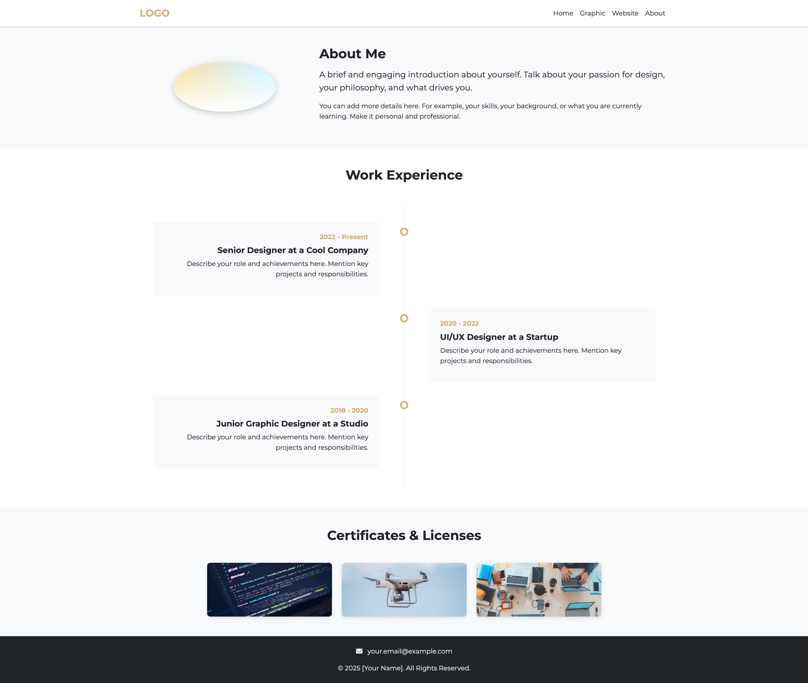
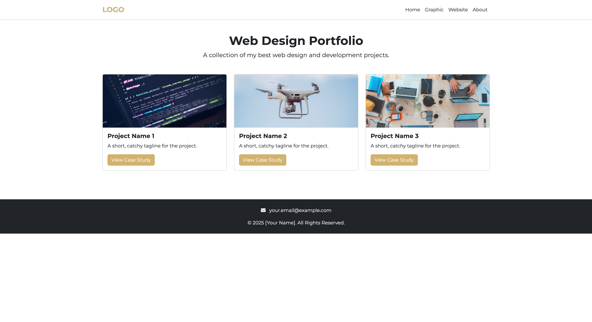
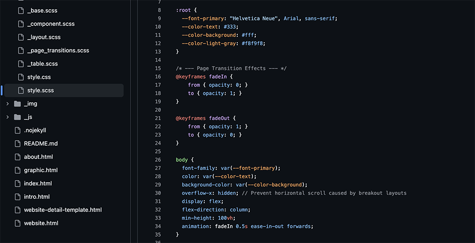

關於此網站
- 透過 Gemini CLI 協作完成。
- 提供給 Gemini 的參考網站：https://www.fujiwara-l.com/。
- 由於無法傳輸/辨識圖片，所有內容皆以純文字描述提供，可以提供網址連結供 Gemini 讀取參考，但經測試似乎不能完成非常複雜的條件。
事前準備
提供給 Gemini 的資訊：
- 網站架構（首頁、關於我、平面設計、網頁設計）
- 網站風格（不指定，讓 Gemini 自由發揮）
基礎架構
當 Gemini 建立好基本的空檔案後，他主動引導了用戶去描述每個頁面的規劃。（以下文字描述為簡略版，實際下指令時有使用更詳細的說明）
- 首頁：使用 swiper.js 製作輪播區塊放置圖片，下方建立一個 CTA 按鈕連到平面設計分頁；使用 swiper.js 製作輪播區塊放置卡片，每個卡片對應到一個專門介紹的網頁。
- 關於我：最上方是簡單的自我介紹區塊，中間請給我一個適合放工作經歷的時間軸，下方則是一個簡易的相簿放置證書等圖片。
- 平面設計：參考「關於我」的證書區塊，但建立分類/分區以及可以快速跳轉到其他區塊的錨點連結區。
- 網頁設計：參考「首頁」的網頁介紹區塊，每個卡片對應到一個專門介紹的網頁




首頁優化
目前生成的首頁過於呆板且很像直接套用模板製作出來的，作為作品集難以引人注目。
問題點

- 無法處理過於複雜的事項，例如：
- 解衝突（鬼打牆解不掉 bug ）
- 特殊佈局（依然被限制在基本框架中，無法做出較活潑的版面）
- 將已經寫好的東西整合修改（會有幻覺，出現根本不存在現存檔案中的東西）
- 模型問題：個人免費帳戶使用時，gemini-2.5-pro 會有每日訪問次數上限．當使用到上限時會切換成 gemini-2.5-flash ，然而免費版的 flash 在程式理解與撰寫方面很顯然的與 pro 有落差。flash 修改 css 時會出現重複編寫的問題，他並不會去讀取我原有的檔案後添加修改，而是直接重新寫一行新的樣式。